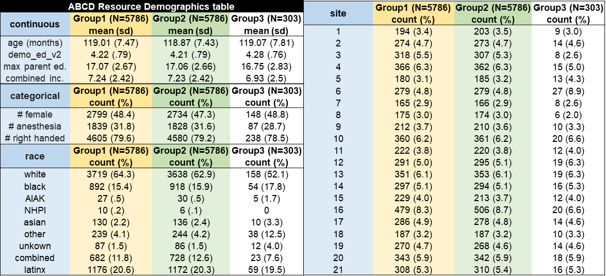

BIDS conversion
Overview
The ABCC data made available in the data release utilizes the Brain Imaging Data Structure (BIDS) standard for data organization. We provide BIDS formatted anatomical MRI images (T1w and T2w), functional MRI images with spin-echo field maps, and diffusion-weighted images with field maps, organized within the following folder structure. The BIDS directory includes separate folders for each modality:
|__ abcc/
|__ rawdata/
|__ participants.tsv
|__ participants.json
|__ sessions.json
|__ sub-<label>/
|__ sessions.tsv/
|__ ses-<label>/
|__ anat/
|__ dwi/
|__ fmap/
|__ func/Note that the BIDS raw data available under dairc/ and abcc/ will be merged into one collection for ABCD release 7.0 and ABCC-BIDS community collection.
Session- & Participant-Level Data
Session-Level
Session-level information is included in the sessions.tsv files located within the subject folders and includes session ID, acquisition time, age, site, scanner details, and automated QC metrics (see details here).
Participant-Level
The participants.tsv file includes participant ID, sex, and a column for demographically matched subsets, matched_group, described in the following section. It also includes extra fields like ethnicity-related information and twin sibling status, which can be ignored as this data is easily accessible via Lasso Portal Query Tool or DEAP’s data dictionary & ontology browser. These extra fields will be removed in the next release.
Demographically Matched Subsets
The matched_group field of the participants.tsv file signifies each participant’s assignment to one of the ABCD Reproducible Matched Samples (ARMS). In Release 2.0, ABCD data were split into 3 demographically matched groups: ARMS-1 (N=5,786) and ARMS-2 (N= 5,786) for use as independent datasets, and ARMS-3 (N=305) for template building and model testing. These group assignments have been carried over into the current release, with the following updated counts: ARMS-1 (N=5,752), ARMS-2 (N=5,745), and ARMS-3 (N=301).

To create the matched ARMS, we chose 9 salient sociodemographic factors thought to be important for developmental outcomes (site, age, sex, ethnicity, grade, highest level of parental education, handedness, combined family income, and exposure to anesthesia), and accounted for family structure (Marek et al. 2019). Anesthesia exposure was included as a matching variable to account for differences in major medical interventions and the possible effects on behavioral and neurodevelopmental outcomes (Schneuer et al. 2018). To maximize the relative independence of the two datasets, family members were kept together in the same ARM and the groups were matched to have equivalent numbers of sibling and twin pairs, and triplets.
Comparison of the counts and means for each of these factors shows that ARMS-1 and ARMS-2 are negligibly and not statistically different samples. Gender shows the largest absolute difference of 2.5%. No other demographic variables differ by more than 1%. See the ABCC paper - Feczko et al. (2021) - for a full description of how these matched groups were generated.
Structural MRI
Anatomical files include T1- and T2-weighted MRI images organized under the anat/ folder of each subject and session. In the event that normalized files were not present, files that had not undergone normalization (e.g. sub-<label>_ses-<label>_T1w.nii.gz) were used instead.
...
|__ anat/
| |__ sub-<label>_ses-<label>_(rec-normalized_)T1w.nii.gz
| |__ sub-<label>_ses-<label>_(rec-normalized_)T1w.json
| |__ sub-<label>_ses-<label>_(rec-normalized_)T2w.nii.gz
| |__ sub-<label>_ses-<label>_(rec-normalized_)T2w.jsonNote About Scanner Differences
Images in this dataset were acquired from three brands of MRI scanner: Siemens, Philips, and General Electric (GE). Siemens anatomical images have intensity normalization applied at the scanner and are therefore higher contrast compared to Philips and GE. This motivated inclusion of Advanced Normalization Tools (ANTs) de-noising as well as ANTs N4 bias field correction during the PreFreeSurfer stage of the processing pipeline for all data. We also implemented ANTs-based atlas registration in PostFreeSurfer instead of FSL’s FNIRT-based method. While these changes had little effect on the high-quality anatomical Siemens data, they significantly improved results for both Philips and GE scanner data.
Functional MRI
Functional files include BOLD functional runs acquired for each task under the func/ folder (including task- MID, nback, SST, and rest, as available) as well as corresponding EPI fieldmaps acquired in AP (dir-AP) and PA (dir-PA) phase encoding directions under fmap/. The functional fieldmaps can be distinguished from DWI fieldmaps via the acq-func tag in the filenames.
...
|__ func/
| |__ sub-<label>_ses-<label>_task-<MID|nback|SST|rest>_run-<label>_bold.nii.gz
| |__ sub-<label>_ses-<label>_task-<MID|nback|SST|rest>_run-<label>_bold.json
|
|__ fmap/
| |__ sub-<label>_ses-<label>_acq-func_dir-<AP/PA>_run-<label>_epi.nii.gz
| |__ sub-<label>_ses-<label>_acq-func_dir-<AP/PA>_run-<label>_epi.jsonNote that the ERI files for tasks (MID, nback, SST), if present, are provided under dairc/sourcedata/.
Field Map Selection
A single pair of positive (posterior to anterior) and negative (anterior to posterior) spin echo field maps are acquired along with each functional scan. Fieldmaps are utilized during image preprocesing to correct for distortions in the phase encoding direction of each fMRI volume using FSL’s topup (see for ABCD-BIDS Pipeline for details). These field maps are highly susceptible to motion artifacts and can have a negative effect on processing if they are not high-quality. Because field maps are largely consistent between runs, we decided to select only a single pair of spin echo field maps to use for all anatomical and functional scans for distortion correction. Based on the assumption that field maps with large motion artifacts will have more noise and higher variance from the average, the abcd-dcm2bids wrapper selects the optimal field map pair based on those with the least variance from the registered group average. The chosen pair of field maps list all anatomical and functional runs in the IntendedFor field of their sidecar JSONs.
Diffusion-Weighted Imaging
Diffusion files include DWI (*_dwi.nii.gz) as well as associated bval and bvec files with information about the strength of the diffusion gradient applied during each volume and diffusion gradients directions, respectively. The diffusion acquisitions also have corresponding fieldmaps, located under fmap/, that can be distinguished from the functional fieldmaps by the acq-dwi tag in their filenames. In the event that there were multiple DWI runs acquired, all filenames will additionally include run-<label>, e.g. dwi/sub-<label>_ses-<label>_run-<label>_dwi.nii.gz and fmap/sub-<label>_ses-<label>_acq-dwi_dir-<AP/PA>_run-<label>_epi.nii.gz.
...
|__ dwi/
| |__ sub-<label>_ses-<label>_dwi.bval
| |__ sub-<label>_ses-<label>_dwi.bvec
| |__ sub-<label>_ses-<label>_dwi.nii.gz
| |__ sub-<label>_ses-<label>_dwi.json
|
|__ fmap/
| |__ sub-<label>_ses-<label>_acq-dwi_dir-<AP/PA>_epi.nii.gz
| |__ sub-<label>_ses-<label>_acq-dwi_dir-<AP/PA>_epi.jsonValues for bval/bvec
During BIDS conversion, the bval and bvec file values associated with the DWI data are typically extracted directly from the DICOMs, as was the case for conversion of data from Siemens and Philips scanner vendors. For GE, these values were provided by the DAIRC and can be found in the nda-abcd-s3-downloader repository.
BIDS Conversion Procedures
Prior to processing, raw DICOM data files are converted to BIDS NIfTIs, provided in the data release (dairc/sourcedata/), using the abcd-dicom2bids wrapper for baseline and year 2 sessions and the abcc_dicom2bids_s3 wrapper for years 4 and 6.
Quality Control Filter
This wrapper first uses the ABCD FastTrack control file to select scans for inclusion based on whether they had a passing QC score (usable == 1). This file is periodically updated to reflect corrections in scan usability scores. The Fasttrack QC file provided in the release (dairc/sourcedata/fasttrack_mri_qc.csv) was used for conversion of Years 4 and 6, while Baseline and Year 2 sessions were filtered based on an older version (abcd_fastqc01.txt from May 2023). We have converted this file to Parquet format and stripped non-essential columns to reduce the file size: abcd_fastqc01_stripped.parquet. It can be downloaded by DUC-approved users via the ABCD Private Release Notes (this page can also be reached via the Lasso Portal Help Center).
In the current version of the FastTrack file, a consolidated column named usable has been introduced. This column replaces three separate columns from earlier versions: ftq_quality, ftq_complete, and abcd_compliant. The usable column is assigned a value of 1 if all three of the original columns (ftq_quality, ftq_complete, and abcd_compliant) have values not equal to 0. If any of these columns has a value of 0, then usable is set to 0.
QC for Years 4 and 6 relied on this usable column, where files were excluded from BIDS conversion and processing if usable == 0. For Baseline and Year 2 sessions, filtering was based on a previous version of the FastTrack file, using the original ftq_quality and ftq_complete columns. In these cases, files were downloaded and converted to BIDS only if both ftq_quality and ftq_complete had values not equal to 0.
Data Completeness Filters
After the file list was filtered to remove all files that did not pass QC, the following additional filters were applied to generate the final list of files selected for BIDS conversion and subsequent processing:
Anatomical Data
Sessions were required to have a usable T1w file at minimum in order to convert to BIDS and process and are otherwise excluded from the release data. When both usable baseline and normalized anatomicals were present, only the normalized T1w/T2w was converted. In the event that normalized files were not present, files that had not undergone normalization (e.g. sub-<label>_ses-<label>_T1w.nii.gz) were used instead.
Functional Data
Functional runs were only converted if a set of usable AP and PA fieldmaps were present. Sessions without usable fieldmaps do not include a func/ folder in the BIDS inputs or functional fieldmaps under fmaps/. These sessions were processed through only the structural portion of the pipeline.
BIDS Conversion & Validation
After download, DICOMs are converted to BIDS NIfTIs using Christophe Bedetti’s Dcm2Bids wrapper for the Chris Rorden Lab dcm2niix. The wrapper also performs BIDS validation using the official BIDS validator. For years 4 and 6, an additional file-wise audit tool was used to ensure all the required files were present. This included checking for required functional runs, anatomical scans (including checking that non-normalized scans are only present if normalized scans are not available), diffusion files, and ensuring that fieldmap pairs were included for each subject/session. After BIDS conversion was complete, all data were run through cuBIDS (v1.2.0) to perform a final round of BIDS validation and resolve all errors noted in the outputs.
Diffusion Values for bval/bvec
During BIDS conversion, the bval and bvec file values associated with the DWI data are typically extracted directly from the DICOMs, as was the case for conversion of data from Siemens and Philips scanner vendors. For GE, these values were provided by the DAIRC and can be found in the nda-abcd-s3-downloader repository.
Resources
- ABCD Study Protocol_Imaging_Sequences.pdf
- Brain Imaging Data Structure (BIDS)
- ABCD BIDS Conversion Utilities:
- abcd-dicom2bids (utilized for Baseline & Year 2 conversion)
- abcc_dicom2bids_s3 (utilized for Years 4 & 6 conversion)